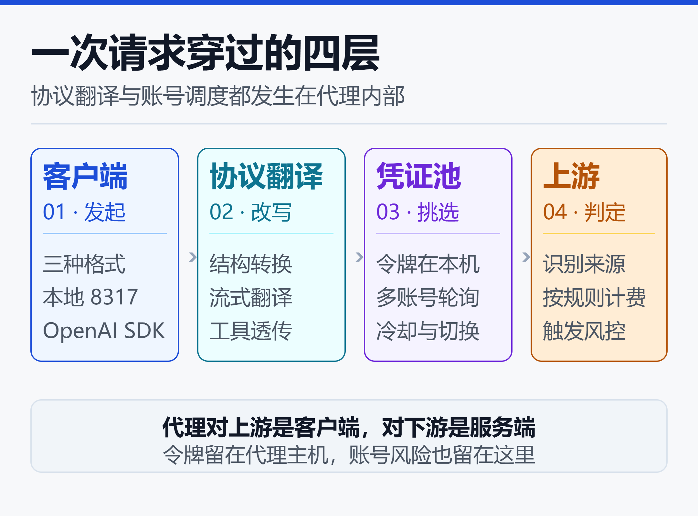
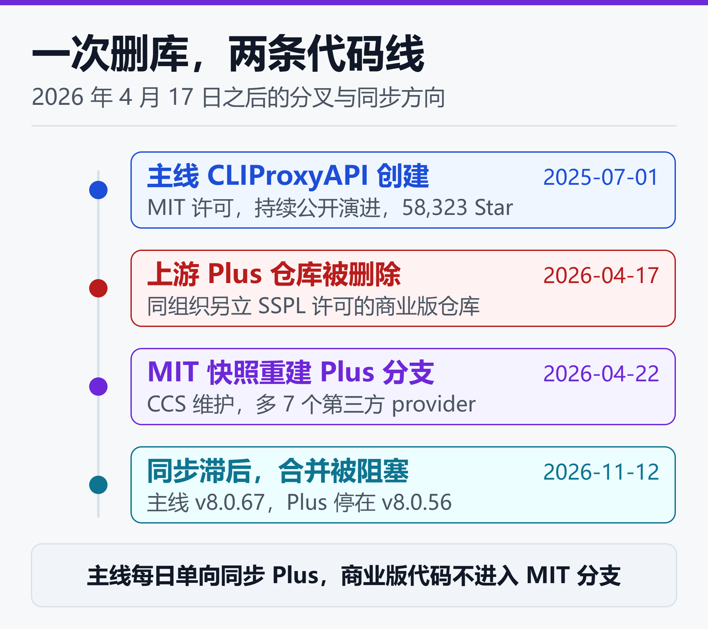

想用订阅跑 API？先看清 CLIProxyAPI 的封号风险、配置要点与 Plus 分支的真实来路
CLIProxyAPI 是一个 Go 写的单二进制本地代理服务器。它复用官方客户端的 OAuth 登录结果，把 Claude Code、ChatGPT Codex、Gemini CLI、Grok Build 等订阅账号，包装成 OpenAI、Gemini、Claude 兼容的 API 接口。
已经付费的订阅额度，经过它变成一条本地 HTTP 端点。Cursor、Cline、OpenAI SDK 这类只认 API 的工具就能直接调用，不必再按 token 单独付一遍。
58.7k 个 Star、9k 个 Fork、45 条待处理 issue。
这是 2026 年 11 月 16 日 GitHub 上 router-for-me/CLIProxyAPI 的实时数字。同一个生态里，另一个叫 CLIProxyAPIPlus 的仓库只有 274 个 Star 和 2 条 open issue。
两个仓库跑的是高度同源的 Go 代码，却不是同一条维护线，也不止一种许可证叙事。更值得留意的是，被不少教程称作「官方增强版」的 Plus 仓库，原版已经在 2026 年 4 月 17 日从 GitHub 上消失过一次。
把已有的 AI 订阅当成 API 来用，需要同时看清三件事：请求究竟怎么被转出去、账号和账单承担了什么代价、手里的二进制来自哪条代码线。漏掉任何一件，部署决策都不完整。
一、它做的事，是把 OAuth 登录态变成本地端点
具体拆开看，这一层并不调用命令行工具本身，而是复用官方客户端的 OAuth 登录流程拿到令牌，再把这个令牌挂到自己的 HTTP 请求上。
流程可以拆成四段。客户端按 OpenAI、Anthropic 或 Gemini 的格式发请求给本地代理；代理做协议翻译，把消息结构改写成目标后端要求的形式；凭证池挑一个可用账号并附上游令牌；上游厂商返回后，代理再翻译回客户端约定的格式，流式或非流式都可以。
默认监听端口是 8317，令牌以 JSON 文件形式存在本地鉴权目录，目录变动会被监听并热重载，加账号不必重启服务。仓库 README 把兼容面写成 OpenAI（含 Responses）、Gemini（含 Interactions）与 Claude 兼容的客户端或 SDK。

这张图的关键在于凭证池的位置：令牌保存在代理主机上，代理对上游表现为客户端，对下游表现为服务端。多账号轮询、失败切换和配额冷却，都发生在这一层。
能力清单并不短。流式、非流式与 WebSocket 响应，function calling 与工具调用，文本加图片的多模态输入，按账号轮询的负载均衡，以及可嵌入自家程序的 Go SDK。管理面走 Management API，配置文件已升级到 v8 布局，同时保留旧版字段与 /v0/management 请求的兼容。
覆盖的账号通道包括 Claude Code、OpenAI Codex、Gemini CLI 与 Antigravity、Grok Build、Kimi、Meta Muse Code、Devin，还有通过配置接入的 OpenAI 兼容上游（例如 OpenRouter）。README 也明确写了「可用模型因渠道而异」。
版本节奏很猛。主线最新发布是 2026 年 11 月 16 日的 v8.0.74，往前数 100 个 release 只回溯到 9 月初，等于两个多月发了上百个版本。这种节奏本身就是运维变量：升级频繁，配置字段和路由行为也在跟着动。
二、代价不是传闻，写在三个 issue 里
讨论这类工具时，最容易滑向两种极端：要么只讲「省下 API 账单」，要么只讲「一定封号」。项目自己的 issue 列表提供了更具体的坐标。
账号层：订阅被自动审核停用
2026 年 3 月 18 日提交的 issue #2211 贴出了原文通知：账号因近期活动的自动审核被停用，提示查阅服务条款与使用政策，并指向 Trust & Safety 申诉入口。填报的客户端是 OpenCode，账号类型是 Claude Code 订阅。
评论里陆续有人附议，也有人追问使用模式：是不是高强度调用、是不是多 Agent 并行。这条 issue 后来被关闭，没有给出触发条件的结论。
从这条记录能确定的只有一件事：存在用户在使用这类链路后遇到订阅停用的情况，而停用通知本身不说明判定依据。
计费层：代理流量被单独计价
2026 年 4 月 8 日的 issue #2599 更值得算账。同一个 Claude Max 账号，走官方桌面端计入套餐内含用量，走代理的 OAuth 请求却被计为 extra usage，按 API 费率对支出上限计费，最终撞到上限被拦下。
该 issue 有 25 条评论，使用的代理版本是 6.9.15。它指向一个比封号更日常的问题：上游有能力在计费层区分原生客户端流量与代理流量。既然「与原生流量不可区分」这个前提不成立，省账单的假设就需要重新验证。
部署层：端点没有内置限流
2026 年 5 月 18 日的 issue #3467 直接指向代码：/v1/、/v1beta/、/backend-api/codex/ 这些代理路由只挂了鉴权中间件，没有限流、排队、按客户端配额或并发上限。
结论写得很直白：任意一个持有有效 API key 的调用方，都能以满并发无限发请求，耗尽所有上游凭证并导致永久封号。这条 issue 把共享部署列为高风险场景，也意味着单用户自用与多人共用一个代理，是两种完全不同的风险模型。
三条线合起来看：账号可能被停用，流量可能被按 API 价计费，端点默认不设防。它们分别落在身份、账单和架构上，不是同一个开关能解决的。
条款环境也在收紧
据 Zylos Research 2026 年 7 月整理的条款与执法脉络，Anthropic 在 2026 年 2 月进一步明确，消费者订阅取得的 OAuth 令牌不得用于其他产品、工具或服务；同期 OpenCode 等第三方 harness 被限制使用 Claude 订阅 OAuth，随后移除了相关支持。
该整理还引述了 Anthropic 工程师对第三方 harness 的说明：这类工具产生的流量模式缺少官方客户端的遥测，出现速率限制或封号问题时难以排查。Open Source Drop 的工具页则提到 2026 年 2 月出现过一轮涉及 Gemini CLI 的账号停用。
中文社区也有另一侧的口径。懒猫商店的应用说明给出的判断是：不会因为使用这个工具本身被封号，但使用方式不当会触发风控，例如用个人订阅跑 CI、多人共享账号、长时间高并发、把订阅当免费 API 转售。
两种说法其实不冲突：工具是本地代理，风险来自账号的使用形态与上游的判定。需要点明的是，主线 README 里并没有一段明确的条款或封号免责声明，只在生态项目里出现了独立的账号风险指南。生产业务应当走官方 API 与官方计费，这个判断不需要额外前提。
三、配置要点，以仓库模板为准
网上流传的配置片段版本混杂。有的教程给出 npm install -g 或 pip install 这类安装命令，与项目实际的 Go 二进制加 Docker 分发方式对不上；有的 config.yaml 还是旧版简化格式。真正可靠的基准是仓库根目录的 config.example.yaml，开头第一行就标明是 v8 布局。
先把监听面收窄
模板里 server.host 的注释写得很清楚：默认空值会绑定所有网卡（IPv4 与 IPv6），要限制在本机就填 127.0.0.1 或 localhost。这是整套配置里最该先改的一项。
config-version: 8
server:
host: 127.0.0.1
port: 8317
tls:
enable: false
如果服务要离开本机，模板还提供 tls、trusted-proxies、max-request-body-bytes 与 commercial-mode 等字段。trusted-proxies 默认空列表，表示不信任转发来的客户端 IP 头；改完需要重启。
客户端密钥不能留默认值
模板开头就提示「复制为 config.yaml 并替换客户端密钥」。部分第三方分发包沿用 your-key-1 这类默认 key，首次启动会强制要求修改。结合上一节那条无限流 issue，一个没改过的默认 key 等于把整个凭证池暴露给任何能连上端口的人。
OAuth 登录由各自的命令行参数触发，例如 --claude-login、--codex-login，以及 README 里出现的 --devin-login。令牌落在鉴权目录，目录被监听并热重载。模板还提示模型目录源可配置为 URL 或本地路径，刷新失败会保留上一次有效的目录。
几个高频坑
令牌有有效期，第三方教程给出的量级是 Claude 约 7 天、Gemini 约 1 小时并自动刷新；出现 401 先重新登录对应账号，具体时长以实际行为为准。
端口 8317 可能与本机其他服务冲突，启动失败先查占用。两个代理实例指向同一个鉴权目录时，会共用同一批账号与同一份速率限制，不会凭空多出额度。
模型名在各渠道之间并不统一，模型别名能把客户端写死的名字映射到实际后端，但同名模型跨后端时，路由仍按请求的模型或别名解析，严格锁定后端要靠唯一别名或前缀。
v6.10.0（2026 年 5 月 1 日）的发布说明只有一条变更：移除 usage tracking 与 logging 功能。需要用量统计就得外接服务，例如 CPA Usage Keeper、CPA-Manager-Plus 或 Oh-My-CPA，它们各自提供 SQLite 持久化、按模型与账号的成本拆解、配额与延迟看板。
四、Plus 分支的真实来路
先说结论：kaitranntt/CLIProxyAPIPlus 不是上游官方发布的增强版，而是一个社区维护的 MIT 快照加同步分支。
仓库的 README-ccs-fork.md 把时间线写得很完整。上游 router-for-me/CLIProxyAPIPlus 于 2026 年 4 月 17 日被删除，同一组织随后出现采用 SSPL 许可的 CLIProxyAPIBusiness；GitHub 对这个商业仓库的许可证字段显示 NOASSERTION，Star 数 81。
现在这个仓库是在删除前的 commit 0c48ef58 上做的 MIT 快照，2026 年 4 月 22 日重建。说明文件里的原话是：MIT 授权不会追溯失效；并且明确要求不要引入商业版仓库的任何代码，因为 SSPL 会影响这个 fork 及其下游用户。

图里最值得记住的是方向：主线仍在 MIT 下公开演进，Plus 分支每天从主线单向合并，Plus 专有的目录不会被上游覆盖；商业版是另一条线，不与这两个仓库互通代码。
它到底多了什么
说明文件列出 7 个主线不存在的第三方 provider：codebuddy、copilot、cursor、gitlab、iflow、kilo、kiro。Plus 的 README 还列了 Qoder 的 OAuth 登录与多账号均衡、Amp CLI 与 IDE 扩展的 provider 路由，并保留被上游移除的用量统计工作流，配套维护一份 CPAMC dashboard fork 作为默认管理面板发布源。
部署上它给出 Docker Hub 与 GHCR 的多架构镜像（linux/amd64、linux/arm64），每个 release tag 发布一次，可用仓库内的 docker-compose.yml 或集群版 compose 启动。README 的拉取示例仍写着 v6.9.45-0，而发布列表最新已到 2026 年 11 月 5 日的 v8.0.56-0。
代价也写在 README 里：所有第三方 provider 支持由社区贡献者维护，项目不提供技术支持；并且只接受与第三方 provider 支持相关的 Pull Request，其他一律拒绝。
同步不是免费的
同步靠每日 GitHub Action 完成，冲突或校验失败会生成带 upstream-sync-blocked 标签的自动化 issue；Plus 专有目录由 .gitattributes 的 merge=ours 保护。这套机制本身相当工程化，但它无法消除版本差。
截至 2026 年 11 月 12 日，同步配置文件停在 UPSTREAM_TAG=v8.0.56，主线已到 v8.0.67，待办列表里还挂着 upstream-sync blocked: v8.0.67 和 merge v8.0.57 两条 issue。换句话说，选 Plus 就是接受一个滞后的上游。
第三方 provider 的脆弱性也有现成样本：自 2026 年 11 月 10 日起，Kiro 请求全部返回 403 FEATURE_NOT_SUPPORTED，原因是代码里硬编码的 Kiro IDE 版本（0.8–0.10.x）低于上游要求的最低版本 1.4.121。上游一改，模拟客户端就得跟着改。
五、按场景选型，别用「无脑 Plus」
社区里流传过「直接用 Plus 就行」的说法，理由是功能更全且与主线同步。把上面的事实摆齐之后，这个结论需要加条件。
| 场景 | 建议 | 关键原因 |
|---|---|---|
| 个人单机调试 | 主线即可 | 风险自行承担 |
| 小团队共用 | 不建议 | 端点无限流 |
| 生产业务 | 官方 API | 计费与条款 |
| 需 Kiro 等 | Plus 分支 | 接受版本滞后 |
| 需用量统计 | 外置面板 | 上游已移除 |
选主线的理由不是它更安全，而是它的更新半径最短：主线每天多次发版，45 条 open issue 里大量是鉴权、冷却、路由与插件的修复，这些内容要绕过每日同步才能进 Plus。
选 Plus 的理由则很具体：确实需要那 7 个第三方 provider，或者依赖被移除的用量统计工作流。此时要额外做两件事：盯住同步 issue 判断落后幅度，以及为第三方 provider 准备随时失效的退路。
无论选哪条线，配置底线相同：只绑定本机、改掉默认 key、给代理加一层自己的限流、把令牌目录当成敏感凭据管理。任何对外提供服务的形态，都超出了「单用户或小可信团队」这个设计假设。
六、生态规模与商业化信号
主线已经不只是单个代理。官方组织下有 20 多个仓库，管理面板 Cli-Proxy-API-Management-Center 有 4,788 个 Star，桌面客户端 EasyCLIProxyAPI 有 3,571 个 Star。
README 列出的下游项目超过 30 个，覆盖 macOS 菜单栏托盘、配额监控、Next.js 管理大盘、VS Code 扩展、MCP server，以及一键部署到 Cloudflare Workers 的网关。
这种密度说明一件事：它已经承担了「订阅额度接入层」的角色，很多工具把 OAuth 登录、账号池和配额读取都委托给它，自己只做界面与编排。
另一面同样清楚。README 的赞助栏里出现了十余家 API 中转服务商，以及面向自动化与多账号运营的住宅代理服务商，其中一条明确写着「每账号独立 IP」。把额度集中、把账号分散、再把接口统一，这条链路的用途已经超出个人 IDE 辅助编程的范畴。
许可证的双轨也在这里显形：主线保持 MIT 且公开演进，第三方 provider 与商业能力进入 SSPL 仓库，社区则用删除前的 MIT 快照续上缺口。对使用者来说，需要判断的不只是功能，还有这条代码线未来由谁维护、按什么规则分发。
小结
CLIProxyAPI 在工程上是一套完成度不低的协议翻译与账号调度层：单二进制、多协议兼容、多账号轮询、可嵌入 SDK、管理 API 齐备。它的 58.7k 个 Star 不是靠概念拿到的。
但它的成本不在软件，而在账号。封号通知、按 API 价计费、端点无限流这三条 issue，分别对应身份、账单与架构；上游条款在 2026 年收紧，也让「订阅等价于 API」这个前提变得更不稳。
Plus 分支的选择则是一道维护题，不是功能题。它是删库前的 MIT 快照，靠每日同步追赶主线，多出 7 个社区维护的第三方 provider，代价是版本滞后、第三方通道随时可能失效，以及一条明确划出的 SSPL 边界。
把本机绑定、客户端密钥、自建限流和令牌保护做完，再用自己的数据跑一遍账单与稳定性，比争论哪个版本更划算有用得多。生产业务走官方 API，仍然是最省心的那条路。
免责声明
本文数据来自公开仓库、README、Release 说明、issue 记录与第三方研究整理，统计口径与时间点已在文中标注，Star 与 Fork 数为 2026 年 11 月 16 日 GitHub 实时值。项目迭代频繁，配置字段、provider 支持与许可证状态可能变动，使用前请以官方最新文档为准。
文中涉及的订阅条款、账号风控与计费判定，属于各上游服务商的政策范围，本文不构成对使用合规性的保证，也不构成采购、投资或法律建议。涉及账号与凭据的操作请自行评估风险。
参考来源
- GitHub —— router-for-me/CLIProxyAPI 项目仓库与 README
- GitHub —— CLIProxyAPI 简体中文 README
- GitHub —— CLIProxyAPI v8 配置模板 config.example.yaml
- GitHub —— CLIProxyAPI issue #2211 订阅账号被自动审核停用
- GitHub —— CLIProxyAPI issue #2599 OAuth 代理流量被计为 extra usage
- GitHub —— CLIProxyAPI issue #3467 代理端点缺少限流与配额
- GitHub —— CLIProxyAPI v6.10.0 Release 移除用量统计
- GitHub —— kaitranntt/CLIProxyAPIPlus 仓库与 README
- GitHub —— CLIProxyAPIPlus CCS Fork Notes 分叉说明
- GitHub —— router-for-me/CLIProxyAPIBusiness 商业版仓库
- GitHub —— Cli-Proxy-API-Management-Center 官方管理面板
- Zylos Research —— 订阅鉴权边界与官方 CLI Agent 的合规自动化
- Open Source Drop —— CLIProxyAPI 工具页与采用度数据
- 懒猫商店 —— CLIProxyAPI 应用说明与封号风险讨论
- Fazm Blog —— ClipProxy 安装、鉴权与多账号配置说明
- 2Libra —— CLIProxyAPIPlus 删库后的社区同步版与镜像
- DeepWiki —— CCS CLIProxyAPI 与 Plus 双后端变体说明
相关阅读
- Vibe Coding的隐藏代价：2000个裸奔应用、630万丢失订单、和322%的权限漏洞
- OpenCode实战指南：免费AI编程Agent + 免费大模型，零成本搞定代码开发
- AI Agent治理与可观测性：企业落地的隐藏成本
- 企业AI Agent部署实战：从0到1600个Agent的落地路径
推荐搭配装备
善其事，利其器。以下硬件能最大化你的AI体验👇
🔗 通过以上链接购买可支持本站持续运营 🙏